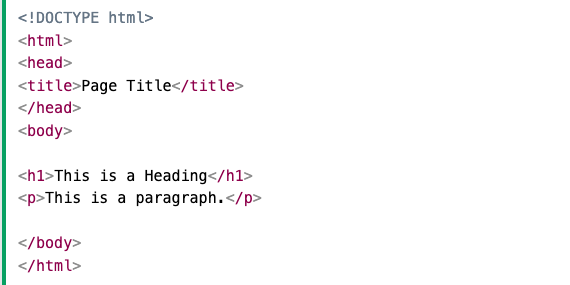

HTML (HyperText Markup Language) ist die Standardprogrammiersprache zur Strukturierung von Webseiten und deren Inhalte.
Sie definiert die grundlegende Struktur einer Webseite durch sogenannte Tags (z. B. <h1>, <p>, <a>), die verschiedene Elemente wie Überschriften, Absätze, Links, Bilder oder Listen darstellen.
HTML alleine reicht nicht aus, um eine ansprechende Webseite zu gestalten oder interaktive Elemente zu erstellen. Dafür werden CSS (für das Design) und JavaScript (für die Funktionalität) verwendet.
Ein einfaches HTML-Dokument sieht so aus:
Ihre Hauptfunktion besteht darin, die Struktur und den Inhalt einer Webseite zu definieren. Dazu gehören:
• Textelemente: Überschriften -> <h1> bis <h6> / Absätze -> <p> / Listen -> <ul>, <ol>, <li>
• Multimedia-Inhalte (Bilder, Videos, Audio)
• Links und Navigation (Hyperlinks, Menüs)
• Formulare (Eingabefelder, Buttons)
• Semantische Struktur (z. B. <header>, <article>, <footer> für eine bessere Verständlichkeit)
Tags sind die Bausteine von HTML. Sie werden verwendet, um Elemente in einer Webseite zu definieren und zu strukturieren. Ein Tag besteht aus einem Namen, der in spitzen Klammern (<>) steht.
• Öffnende und schließende Tags: Die meisten Tags bestehen aus einem öffnenden Tag, einem Inhalt und einem schließenden Tag. Beispiel: <p>Das ist ein Absatz.</p>
• Selbstschließende Tags: Einige Tags benötigen keinen separaten Schlusstag. Sie schließen sich selbst. Beispiel: <img src="bild.jpg" alt="Ein Beispielbild">
• Attribute in Tags: Tags können Attribute enthalten, die zusätzliche Informationen bereitstellen. Beispiel: <a href="https://example.com">Besuche die Webseite</a>
Mit dem <a> Tag (anchor Tag). Das wichtigste Attribut ist href, das die Ziel-URL angibt. Siehe Beispiel oben (Attribute in Tags).
Bilder werden in HTML mit dem <img> Tag eingefügt. Dieser Tag ist selbstschließend, das heißt, er benötigt kein separates Schlusstag (</img>).
Struktur: Attribute -> src (source) -> Gibt den Pfad zur Bilddatei an (lokal oder URL). / Attribute -> alt (alternative Beschreibung). Beispiel: <img src="https://example.com/bild.jpg" alt="Ein Bild aus dem Internet">
HTML-Attribute sind zusätzliche Informationen, die an HTML-Elemente angehängt werden, um deren Verhalten oder Darstellung zu steuern. Sie bestehen aus einem Namen und einem Wert, die im öffnenden Tag des Elements angegeben werden.
Beispiele für häufige HTML-Attribute -> VS Code: ../../../Work/Carlos/HTML/Beispiele/attribute.html
Inline-CSS: CSS wird direkt im HTML-Tag über das style-Attribut angewendet. Dies ist die einfachste Methode, eignet sich jedoch nur für sehr kleine Anpassungen.
Internes CSS (im <head>-Bereich): CSS kann innerhalb des <style>-Tags im <head>-Bereich der HTML-Seite eingebunden werden. Dies ermöglicht eine zentralisierte Gestaltung für die gesamte Seite.
Externe CSS-Datei: CSS kann auch in einer separaten Datei gespeichert und über das <link>-Tag in das HTML-Dokument eingebunden werden. Diese Methode ist die beste, wenn man viele Seiten hat, die dasselbe Design verwenden sollen, da sie die Wartung erleichtert.
Beispiele für CSS-Integration -> VS Code: ../../../Work/Carlos/HTML/Beispiele/anwendungCSS.html
In CSS wird das display-Attribut verwendet, um zu bestimmen, wie ein HTML-Element auf der Seite angezeigt wird. Es definiert das Verhalten eines Elements im Layout, insbesondere, ob es als Block-, Inline- oder Flex-Element dargestellt wird und wie es mit anderen Elementen interagiert.
Häufige Werte für das display-Attribut:
display: block; -> Default-Wert für die meisten Elementen. Elemente mit display: block nehmen die gesamte verfügbare Breite ein und beginnen auf einer neuen Zeile. Sie sind Block-Elemente.Ein Block-Element wird immer unter dem vorherigen Element angezeigt, was dazu führt, dass neue Block-Elemente immer auf der nächsten Zeile erscheinen.
display: inline; -> Elemente mit display: inline nehmen nur so viel Platz ein, wie sie benötigen, und fließen in den Textfluss ein, ohne eine neue Zeile zu beginnen. Inline-Elemente bleiben auf der gleichen Zeile wie benachbarte Inline-Elemente und können nicht in der Breite skaliert werden.
display: inline-block; -> Eine Kombination aus block und inline. Ein Element mit display: inline-block verhält sich wie ein Block-Element (kann Höhe und Breite annehmen), aber es bleibt im gleichen Zeilenfluss wie Inline-Elemente. Wird oft für Layouts verwendet, bei denen Elemente nebeneinander angezeigt werden sollen, aber auch eine bestimmte Größe haben.
Beispiele für Display Values: VS Code: ../../../Work/Carlos/HTML/Beispiele/displayValues.html